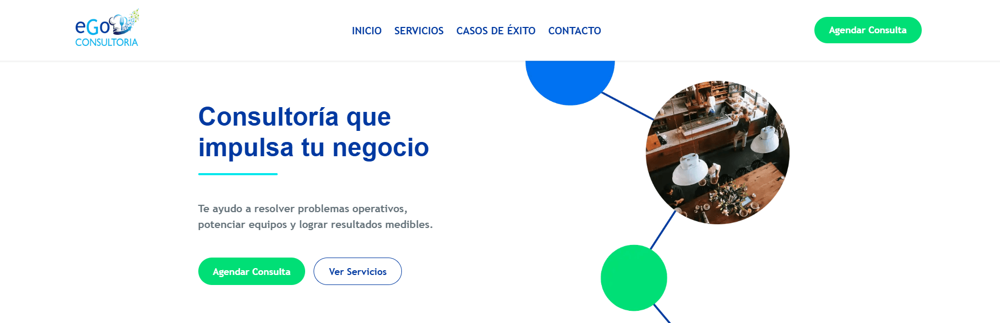

Consultoría Gastronómica EGO
Consultora especializada en gestión gastronómica que necesitaba una presencia online profesional para transmitir experiencia y mostrar sus servicios.
Diseño y desarrollo de un sitio institucional enfocado en claridad de contenido y credibilidad de la marca.
HTML5
CSS3
JavaScript